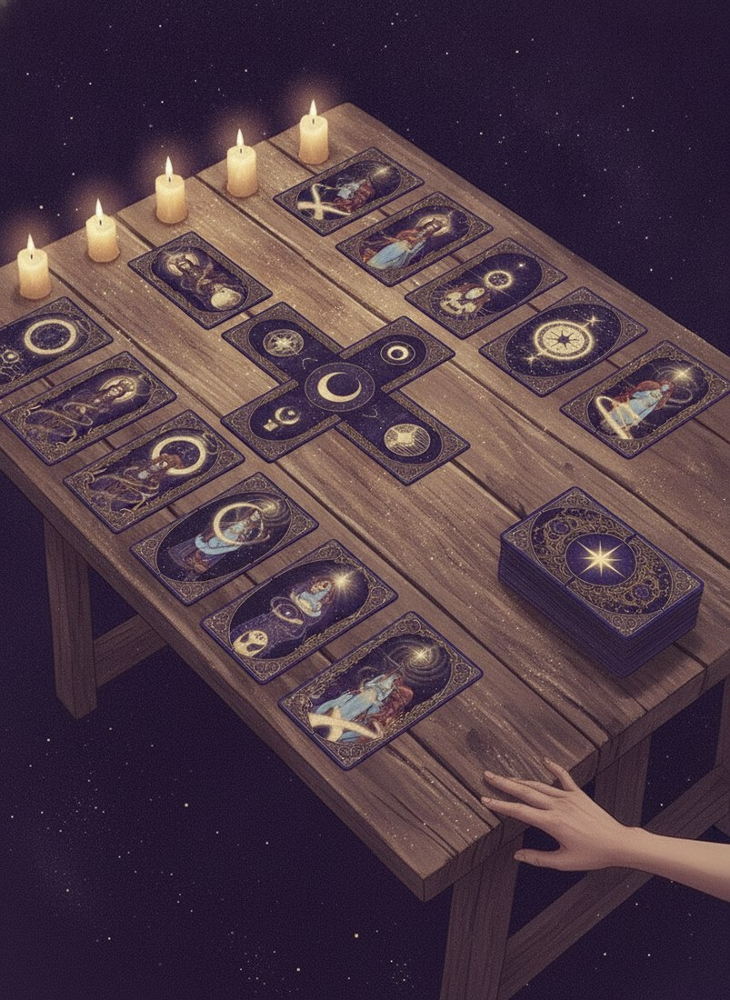

The cards speak
Seventy-eight images, older than any of us, laid out to your question. Tarot does not predict so much as reflect. It gives shape to what you already sense and cannot yet say.
Three faces of a reading
Every reading moves through these figures. The one who asks, the one who sees, and the clarity that arrives.

The Seeker
You, and the honest question you carry. The reading begins the moment you name what you truly want to know.

The Oracle
Your psychic, reading the cards as they fall. Symbol, position, and intuition woven into something you can act on.

The Insight
The moment the cards stop being pictures and become yours. Clarity arrives, and you leave knowing what you came to find.
The spreads we read
Different questions want different shapes. Your psychic will choose the layout that fits what you have come to ask.
 IThree-Card
IThree-CardPast, present, and where things are headed. Quick, clear, and often all a single question needs.
 IICeltic Cross
IICeltic CrossThe deep read. Ten cards mapping the forces around a situation, from its root to its likely outcome.
 IIIRelationship
IIIRelationshipTwo people, laid side by side. What each brings, what stands between, and where the bond is truly going.
 IVYear Ahead
IVYear AheadTwelve cards for twelve months. A season-by-season sense of what is rising and what is winding down.
 VYes / No
VYes / NoFor the question with a single edge. A focused pull when you need direction, not a long story.
 VIDecision
VIDecisionTwo paths, drawn out card by card. See where each road leads before you commit your steps to one.

Older than the questions we bring it
Tarot has been read for centuries, passed hand to hand through courts and kitchens and quiet back rooms. The images have stayed remarkably steady because they were never really about the future. They are about the human situations that repeat in every age. Love, loss, choice, courage, and change.
A good reader does not perform mystery. They translate. Our tarot psychics are rigorously vetted, with fewer than one in twenty applicants accepted, so the cards fall into experienced hands and come back to you as something useful.
See all readings →Let the cards answer.
New members read from $1 per minute, backed by our satisfaction guarantee. Connect by phone, chat, or video.
Choose a tarot psychicSatisfied or your money back. For entertainment. 18+.